Guía · Recurso para el sector salud
Herramientas y criterios para profesionales y directivos del sector.
Antes de empezar
Esta no es una guía técnica. Es una guía para usar bien lo que ya está disponible.
La inteligencia artificial (IA) dejó de ser una promesa y hoy resuelve tareas concretas en la práctica clínica y en la gestión: buscar evidencia, leer documentos largos, redactar, organizar información. El problema no es la falta de herramientas, es saber cuál usar para qué, y cuándo no confiar en ellas.
En las próximas páginas va a encontrar las herramientas que consideramos más útiles para el sector salud, con criterios de uso reales, ejemplos y advertencias. Sin tecnicismos y sin entusiasmo ingenuo.
La mayoría de las personas abren una sola herramienta para todo y se frustran. El primer principio es simple: cada tipo de tarea tiene una herramienta que la hace mejor.
Si necesita una respuesta clínica con evidencia detrás, no use un asistente generalista. Use una herramienta diseñada para evidencia médica, que cite fuentes verificables.
Si necesita buscar información actual en internet (una guía publicada esta semana, un dato reciente), use un buscador con IA que muestre las fuentes, no un modelo que responde “de memoria”.
Si necesita trabajar sobre sus propios documentos (un protocolo, varios papers, las actas de un comité), use una herramienta que analice los archivos que usted le sube, sin mezclar con información de afuera.
Si necesita redactar, resumir, traducir o pensar en voz alta, ahí sí los asistentes generalistas (ChatGPT, Claude, Gemini) son ideales.
La herramienta correcta depende de si quiere que la respuesta venga de sus datos, de fuentes citadas, o del conocimiento general del modelo. Confundir esas tres cosas es la causa más común de respuestas que parecen buenas y no lo son.
Esta es la categoría donde la IA da más valor al profesional de salud, y también donde un error tiene más consecuencias. Por eso la regla es una sola: use herramientas que citen, y verifique la cita.
Pensada específicamente para medicina. Responde preguntas clínicas apoyándose en literatura revisada y guías, y muestra de dónde sale cada afirmación. Es la opción más alineada con la práctica clínica cuando lo que necesita es una respuesta con respaldo, no una opinión.
“¿Cuál es el manejo inicial recomendado para hipertensión en un paciente con enfermedad renal crónica?”
Un buscador con IA que responde y lista las fuentes web que usó. No es una herramienta médica, pero es excelente para información actual y para verificar rápido un dato con su origen a la vista. Útil para preguntas de contexto, novedades regulatorias, o cuando quiere llegar a la fuente original.
Orientadas a literatura científica. Buscan sobre papers y ayudan a ver qué dice la evidencia sobre una pregunta, sintetizando varios estudios. Sirven para una revisión rápida del estado de un tema antes de profundizar. No reemplazan una revisión sistemática, pero ahorran horas de tamizaje inicial.
Ninguna de estas herramientas reemplaza el criterio clínico ni la lectura de la fuente primaria en decisiones importantes. La IA puede resumir mal, citar fuera de contexto, o presentar como consenso algo que está en discusión. La cita existe para que la verifique, no para que confíe sin mirar.
Usted le sube sus documentos (protocolos, papers, guías, apuntes, transcripciones) y conversa con ese material. La diferencia clave: responde solo en base a lo que cargó, y le indica en qué parte del documento está cada respuesta. Es ideal para estudiar un conjunto de guías, preparar una clase, o extraer lo importante de documentos largos sin que el modelo “invente” desde afuera. Para un profesional que trabaja con bibliografía propia, es de las herramientas más subestimadas del listado.
ChatGPT, Claude y Gemini son los tres asistentes de propósito general más capaces. Sirven para redactar, resumir, reformular, traducir, estructurar ideas, preparar comunicaciones, o pensar un problema en voz alta. Las diferencias entre ellos son menores frente a una regla que sí importa.
Redacción y edición de textos, resúmenes de material que usted le pega, reformular algo complejo en lenguaje claro para un paciente, organizar información, traducir, generar borradores.
No los use como fuente de hechos clínicos ni de datos que requieran exactitud y respaldo. Un asistente generalista puede afirmar con seguridad algo incorrecto: es lo que se llama “alucinación”. Para evidencia, vaya a la sección 2.
Nunca cargue información identificable de un paciente en estas herramientas sin saber qué política de privacidad y qué marco legal aplica. Lo vemos en detalle en la sección 5.
La calidad de la respuesta depende casi siempre de cómo se pregunta. No hace falta aprender nada técnico, alcanza con cuatro principios.
En lugar de “explique la diabetes”, pruebe: “Actúe como un médico clínico que le explica a un paciente recién diagnosticado, sin formación médica, qué es la diabetes tipo 2. Use lenguaje simple y un tono tranquilizador”. El mismo modelo, con contexto, da una respuesta mucho más útil.
Pida lo que necesita: “Resúmalo en 5 puntos”, “Hágalo en una tabla”, “Máximo 100 palabras”, “En tono formal para un comité”. Si no lo indica, el modelo elige por usted y casi nunca acierta.
Si quiere que algo salga de cierta manera, muéstrele un ejemplo: “Reescriba estas indicaciones con este estilo: [pegue un ejemplo bien hecho]”. Los modelos imitan muy bien cuando ven un modelo a seguir.
La primera respuesta es un borrador. Corrija sobre ella: “Más corto”, “Quite el tercer punto”, “Hágalo más formal”, “Agregue una advertencia sobre interacciones”. La conversación es la herramienta, no el primer mensaje.
Pídale al modelo que le diga qué información le falta antes de responder: “Antes de armar el resumen, dígame qué datos necesita de mí”. Evita respuestas genéricas y lo obliga a usted a precisar lo que quiere.
Esta es la sección que separa el uso profesional del uso improvisado. Tres temas que ningún directivo ni profesional debería pasar por alto.
Datos de pacientes y privacidad. La regla de base: no cargue datos identificables de pacientes (nombre, DNI, historia clínica completa) en herramientas de uso general sin entender qué pasa con esa información. Muchas plataformas usan lo que se escribe para entrenar sus modelos, salvo que tengan una configuración o un acuerdo específico que lo impida. Si necesita trabajar con datos sensibles, hace falta una solución pensada para eso, con el marco legal correspondiente. Anonimizar antes de cargar es la práctica mínima.
El error de delegar el criterio. La IA asiste, no decide. Toda salida relevante para un paciente o para una decisión institucional tiene que pasar por revisión humana. El riesgo real no es que la herramienta se equivoque, es que se equivoque de forma convincente y nadie lo note. La responsabilidad sigue siendo del profesional, siempre.
Sesgos y límites. Estos modelos aprenden de datos que tienen sesgos, vacíos y contextos que no son necesariamente los de su población. Una recomendación que sirve para una población puede no aplicar a la suya. El criterio clínico y el conocimiento del contexto local son irremplazables.

Para cerrar
La IA en salud no se trata de reemplazar al profesional, se trata de darle mejores herramientas a quien tiene el criterio para usarlas. Las herramientas de esta guía ahorran tiempo, amplían el alcance y mejoran el acceso a la evidencia. Pero ninguna piensa por usted, y esa es exactamente la razón por la que su criterio vale más, no menos.
Empiece por una herramienta, una tarea concreta, y úsela bien antes de sumar la siguiente. El valor no está en usar muchas, está en usar la correcta con criterio.